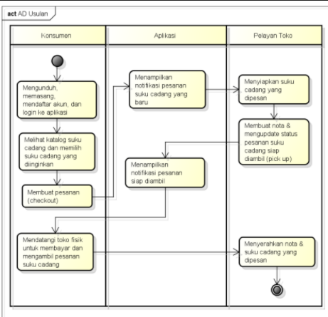

Berisi Saduran Matakuliah Analisis dan Perancangan RPL
Nama : Tekat Tri Wiyono
Nim : 1811500111
Kelompok : TI6J
Matkul : Analisis dan Perancangan PL
Berikut adalah saduran materi saya pada pertemuan ke-6
class diagram menggambarkan antar class atau hubungan antar tabel
class diagram terdiri dari:Nama class,atribut,dan method
Nama Class atau nama tabel
Atribut diisi dengan field yang menjadi key,nama field,tipr data,lebar/panjang data
Method diisi dengan operasi apa saja yang dilakukan pada class/tabel,misal;selec/baca,insert/tambah/simpan,update/ubah,delete/hapus,count/hitung jumlah,auto number/nomor otomatis/kode otomatis,dst
class diagram respresentasi lain dari entity relationship diagram(ERD) dan logica record struture(LRS) ,tetapi lebih lengkap karena memuat struktur tabel dan operasi terhadap basis data(queri)
terhadap tabel tersebut
stereotype->menentukan/menandakan atribut yang menjadi PK/primary key maupun fk/foreign key
Multiplicity->menentukan tingkat hubungan/kardinalitas antar class melalui association(garis hubungan antar class)
* 1=hanya 1 dan pasti hanya 1
* 0..1=dapat tidak ada(kosong)sampai dengan 1
* 0..*=dapat tidak ada(kosong) sampai dengan tidak terhingga
* *=dapat banyak(tak terhingga)
* 1..*=sedikitnya 1,bisa lebih dari 1
